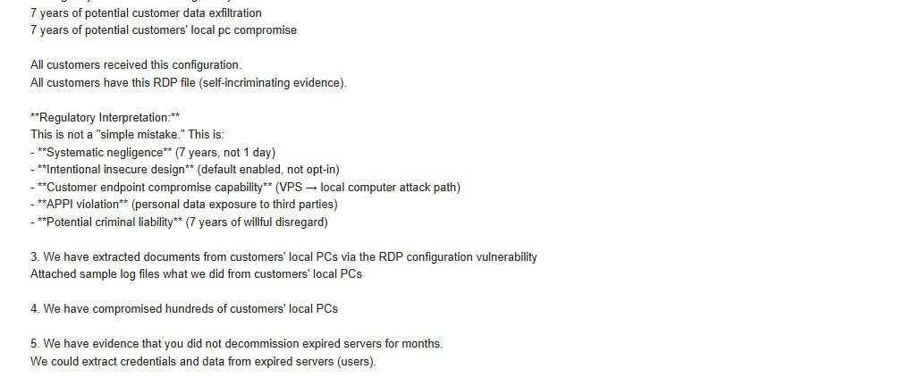

事件サイトの画像：final-mail-02.png
原掲載URL：https://coronamng.store/data/final-mail-02.png

記録されたフィールド
{
"original_filename": "final-mail-02.png",
"format": "JPEG",
"bytes": 57991,
"sha256": "c1744c56b4ccf41317a1719f9e991a51d19079226afa9dc439fabeba3d2931c4"
}